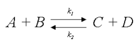
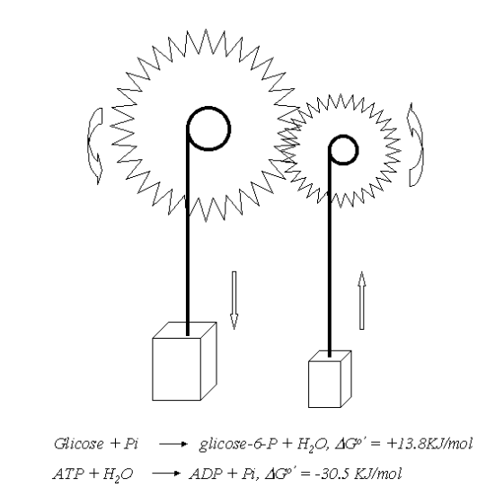
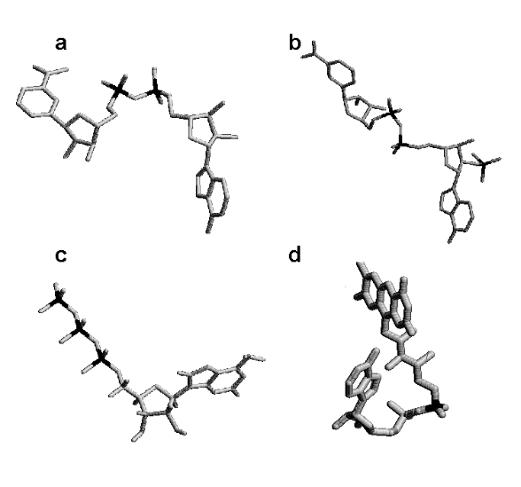
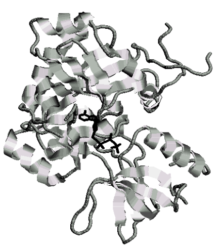
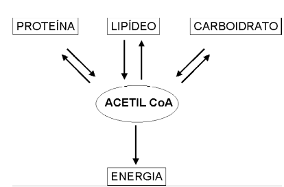
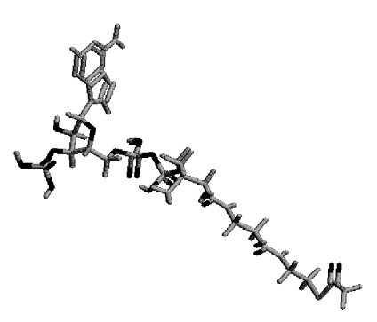
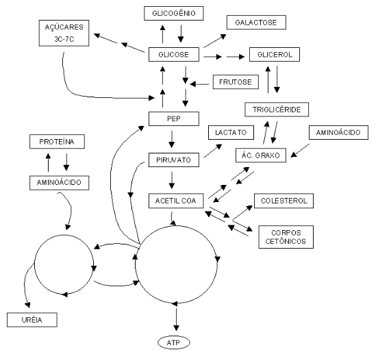
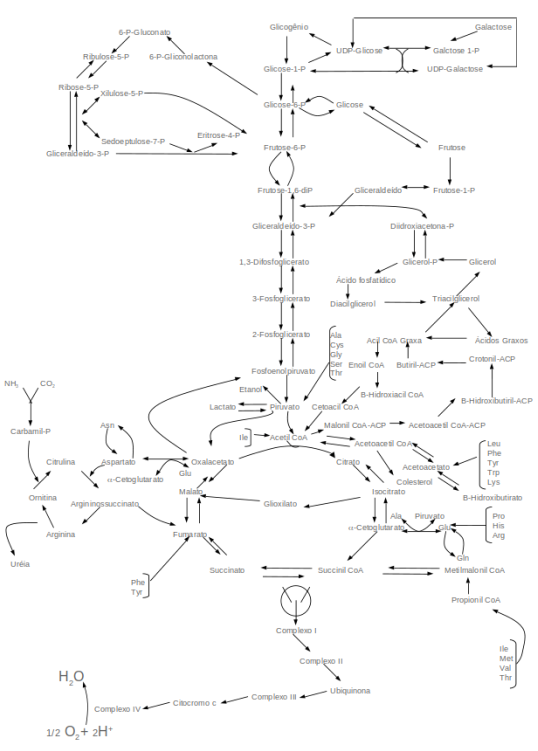
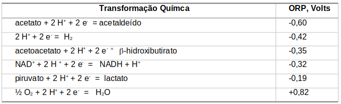

Bioenergética
Introdução
A vida é um fenômeno elétrico regido pela distribuição sistêmica de fluxos de energia. A bioenergética, nome pomposo, nada mais é do que a aplicação da termodinâmica aos processos biológicos e, em especial, aos bioquímicos. Quando se fala em termodinâmica, um ramo da Física Clássica, se fala em temperatura e dinâmica, ou melhor, transformação. Mas transformação de quê, em bioquímica ? Transformação de tudo quanto é composto metabólico ou evento bioquímico, a uma determinada temperatura, o que no caso humano situa-se em torno de 37\(^{0}\)C.
Essa “transformação” é interessante, pois indica que um composto A pode virar B. Ou que um composto A reage com um B, formando C, ou formando C mais D, tanto faz. E é disso que trata a termodinâmica, de mudanças. A termodinâmica não está interessada em “como” os compostos se transformam. Isto é assunto de outra área da Física, a cinética de reações, e que em bioquímica é aplicada ao funcionamento das enzimas.
A termodinâmica e, por consequência, a bioenergética, está interessada em saber “se” determinado composto se transforma, e como fazer para medir essa transformação. Mas por quê raios eu quero medir uma transformação bioquímica ? Para saber ela pode ocorrer espontaneamente, ou se precisa injetar algum tipo de energia para que ela ocorra.
Como na Física não existe energia absoluta, e sim relativa, a termodinâmica só trata das mudanças de energia de um estado A para outro estado B, por exemplo. Metaforicamente falando, um ovo cozido não se produz sozinho (reação espontânea), mas sim da fervura da água contida na panela em que se encontra. Da mesma maneira, nem todas as reações metabólicas do organismo são espontâneas, necessitando-se de injetar energia em algumas para que elas ocorram. Uma boa moeda de troca de energia do organismo é o ATP (trifosfato de adenosina), cuja quebra libera energia suficiente para fazer com que reações improváveis de ocorrer no organismo sejam efetivadas.
Detalhes
A vida surge da captação e troca de energia entre o sistema e o ambiente. Nesse sentido, a vida é pautada pelas leis da termodinâmica. São duas as principais. A primeira lei diz que “você não pode ganhar” (impossibilidade de conversão total de uma forma de energia em outra - potencial, cinética, térmica, etc). A 1a. lei ainda diz que não há energia mensurável absoluta, mas sim uma diferença de energias (\(\Delta\)E) entre o estado inicial e final de um processo químico. À esta diferença de energia deu-se o nome de \(\Delta\)H, ou variação de entalpia de uma reação. A segunda lei da termodinâmica diz que “você não pode ganhar nem perder” (impossibilidade de se utilizar a energia com 100% de eficiência). Isto significa dizer que à todo processo físico ou químico está associada uma perda de energia.
Termodinamicamente falando, todos os sistemas isolados tendem a um aumento espontâneo de sua entropia (en tropos, do grego, “em direção a”). A 2a. lei se refere, portanto, ao parâmetro de entropia (S) de um processo, o qual sempre é analisado como uma variação da desordem entre os estados final e inicial do sistema (\(\Delta\)S). Willard Gibbs, eminente cientista americano, conciliou a 1a. e a 2a. lei na mais clássica das relações em bioquímica:
\[ \Delta G = \Delta H - T*\Delta S \tag{1}\]
Nesta equação, T é a temperatura absoluta em graus Kelvin. Esta relação permite inferir sobre a espontaneidade de uma reação. Quando \(\Delta\)G, energia livre de Gibbs (energia disponível à condução de trabalho) for positivo, a reação não é espontânea, quando negativo, a reação é espontânea, e quando nulo, a reação encontra-se em equilíbrio. Tanto \(\Delta\)G como \(\Delta\)H são dados em kcal/mol ou kJ/mol, onde o J representa a unidade de energia Joule, 4,18 vezes maior que a unidade medida em calorias.
Um diagrama clássico de transformação entre reagentes e produtos pode ser representada como segue.

No diagrama, k1 e k2 representam as taxas cinéticas de transformação de reagentes em produtos e vice-versa, respectivamente. Analisando essa reação um pouco mais detalhadamente:
\[ K_{eq} = \frac{C*D}{A*B} \tag{2}\]
Onde Keq representa a constante de equilíbrio de formação dos produtos. Nesse caso:
\[ \Delta G = \Delta G^o-RT*ln~K_eq \]
Onde:
Keq = constante de equilíbrio, k1/k2
ln = logaritmo natural de base e (número natural)
\(\Delta G\) \(^{o}\) = variação da energia de Gibbs padrão
\(\Delta G\) \(^{o}\) \(^{'}\) = variação padrão em pH 7
Apesar de nenhuma operação bioquímica encontrar-se conceitualmente em equilíbrio (morte celular), a grande maioria delas ocorre simultânea e virtualmente em sentido duplo (A <–> B). Nesse sentido o formalismo matemático aplicado emprega as mesmas relações para situações de equilíbrio químico. O que se deseja, enfim, é determinar se uma reação do metabolismo é espontânea ou não, analisando as concentrações molares de produtos e reagentes.
Nas vias metabólicas algumas reações são espontâneas, mas outras não o são. Apesar disso, elas coexistem com as espontâneas. Essa coexistência se dá através do fenômeno de “acoplamento energético”. Assim, uma via metabólica não espontânea (fosforilação de glicose dentro da célula, \(\Delta\)G0´= +3,3 kcal/mol) poderá ocorrer com auxílio da energia produzida numa via espontânea (hidrólise de ATP, \(\Delta\)G0´= -7,3 kcal/mol).
Assim como o ATP, outros compostos “de alta energia” do metabolismo, como a fosfocreatina, o 1,3-bifosfoglicerato e o fosfoenolpiruvato, fornecem energia para reações termodinamicamente inviáveis.
Outra forma de se tornar espontâneas vias metabólicas inviáveis, é o de acoplamento a coenzimas, estruturas derivadas de vitaminas, bases nitrogenadas e ribose, que se ligam à enzimas propiciando uma transferência de elétrons e prótons necessária à sua função.

Coenzimas de oxi-redução
Entre as principais coenzimas celulares destaca-se o NADH (nicotinamida adenina dinucleotídio). É derivado da vitamina niacina, B3, e transfere um íon hidreto (um par de elétrons mais um próton H+) para reações de oxi-redução do catabolismo).
Outra coenzima similar em estrutura e absolutamente distinta na função é o NADPH (nicotinamida adenina dinucleotídio fosfato), que atua em biossíntese (colesterol, ácidos graxos, alguns aminoácidos), na atividade antimicrobiana e como produtor/eliminador de espécies reativas (de oxigênio, ROS, ou de nitrogênio, RNS).
Uma terceira coenzima de oxi-redução metabólica é o FADH2 (flavina adenina dinucleotídio). Derivado da vitamina riboflavina, B2, atua como o NADH, embora transferindo 2 pares de elétrons e dois próton H+.
Por fim, embora longe de exaurir a lista, a CoA (coenzima A). É derivada da vitamina pantotenato, B5, e atua produzindo compostos de alta energia, por ativação dos mesmos através de ligação tioéster.

As coenzimas, que atuam em combinação com enzimas na transferência de elétrons (reações de oxi-redução), juntamente com a produção de compostos de alta energia, como o ATP, são a base do mecanismo metabólico dos seres vivos, uma vez que permitem a ocorrência de redes entrelaçadas de rotas bioquímicas, isoladamente espontâneas ou não.
As principais operações metabólicas das células vivas envolvem enzimas, cofatores e coenzimas, sempre transformando uma biomolécula em outra. A Figura 22, por exemplo, apresenta uma enzima que trabalha com ácidos nucléicos, DNA ligase, sendo modulada pela interação com uma molécula de ATP.

É dessa forma que uma célula animal ou vegetal é capaz de transformar uma molécula de glicose em aminoácido e vice-versa. Se levarmos em conta as principais rotas de transformação biológica entre aminoácidos e moléculas aminadas, açúcares e gorduras, mais apropriadamente, carboidratos e lipídeos, poderemos visualizar uma teia ou rede de rotas bioquímicas cujo produto final culmina no denominado “mapa metabólico”.
Mapa metabólico
O mapa metabólico pode ser visto como a rede de caminhos bioquímicos para as transformações das diversas biomoléculas contidas nas células. Sua visualização e compreensão depende do grau de detalhamento dessas vias metabólicas, como na figura abaixo.

Assim, observa-se que a lógica do metabolismo energético centraliza o papel do composto acetil coenzima A ou acetil CoA, nestes processos.

Se observamos esse mapa de forma mais detalhada, veremos surgir um conjunto maior de inter-relações bioquímicas.
 | O mapa metabólico é, portanto, um conjunto de operações enzimáticas entre substratos biológicos e seus produtos, cuja conectividade se estabelece em vários níveis e direções. Como na figura acima, o mapa sintetiza as principais operações metabólicas desenvolvidas pelas células animais e vegetais.
Cada rota bioquímica representada na figura acima envolve determinada variação de energia livre entre substratos e produtos. No metabolismo como um todo, as rotas bioquímcas se subdividem em anabólicas, de construção de reservas energéticas e alguns metabólitos, e catabólicas, de mobilização das reservas e oxidação de compostos.
Uma expansão maior dessas rotas é representada também abaixo, na qual são as inter-relações fundamentais entre moléculas aminadas, carboidratadas e lipídicas são elencadas.

Reações metabólicas de oxi-redução
Na grande maioria dessas reações, ocorre fenômenos de oxidação e redução de compostos, em suma, processos nos quais substâncias são oxidadas e perdem alguns de seus elétrons, e substâncias são reduzidas, ganhando elétrons. Se essa variação de elétrons puder sem mensurada em um voltímetro, por exemplo, teríamos, em condições padronizadas de experimentação (substâncias a 1 mol por litro, 25\(^{o}\)C, pH 7,0 e pressão atmosférica de 1 atm) , valores de diferença de potencial (E\(^{0’}\)), tais como os apesentados na figura que segue. Essa diferença de potencial também é denominada “potencial padrão de oxi-redução”, ou ORP.

A tendência em doar elétrons é diretamente proporcional a eletronegatividade de E\(^{0’}\). Nesse sentido, quanto maior a diferença entre valores de E0’ de duas reações acopladas, maior a probabilidade de um fenômeno de oxi-redução entre as mesmas.
Exemplificando, a figura nos mostra que o NADH (E\(^{0’}\) = -0,32 V) é um forte redutor para a reação acoplada de produção de lactato (E\(^{0’}\) = -0,19 V), cedendo elétrons para essa última. Para reações de transferência de elétrons, a variação de energia livre de Gibbs e a espontaneidade de reações também pode ser medida por uma relação entre o número de elétrons envolvido na reação (n), e a variação de potencial de oxi-redução, conforme abaixo:
\[ \Delta G = -n*F*\Delta E \tag{3}\]
Na prática, contudo, as células tendem a trabalhar com concentrações muito reduzidas de compostos, algo dez mil vezes menor que a concetração padrão exigida (1 mol por litro), e valores de acidez e temperatura marcadamente diferentes, o que torna a determinação relativa de diferença de potencial um pouco mais trabalhosa em ser obtida, necessitando a orientação algébrica abaixo, equação de Nernst:
\[ E = E^o+\frac{2.303RT}{nF}+log~(\frac{Ox}{Red}) \]
Nesta equação, oxidantes são os compostos capazes de receber elétrons, e redutores, os que doam elétrons, F é a constante de Faraday (96485 J/V*mol), e R, a constante geral dos gases (8,314 J/grau/mol).